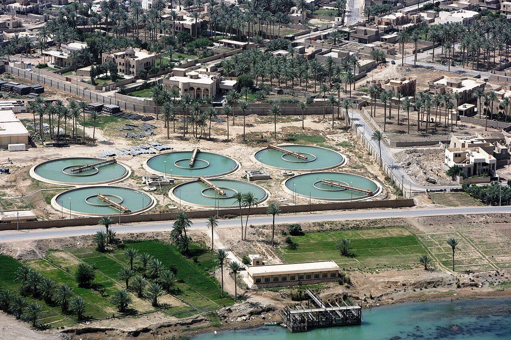
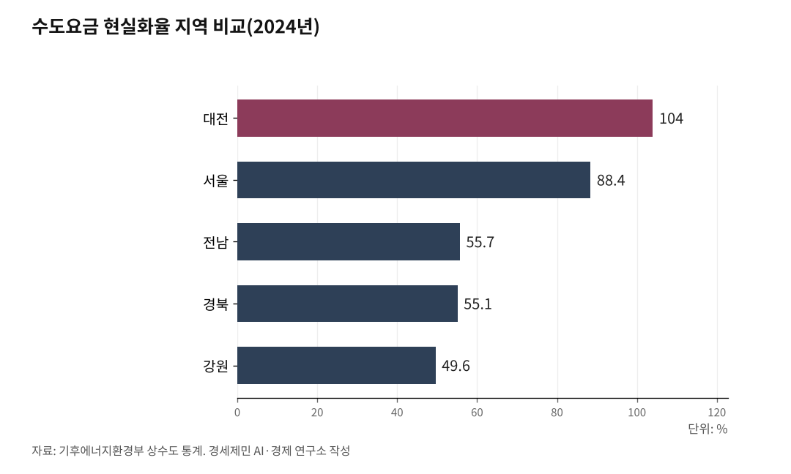

[한국경제 불편한 진실⑯] 물·인프라 — 원가의 4분의 3에 파는 수돗물, 낡은 관은 미래로 미룬다
2024년 수돗물 생산원가는 톤당 1114원, 요금은 829원이다. 원가 회수율 74.4%
땅에 묻힌 수도관 열 개 중 넷은 21년을 넘겼고, 새는 물이 한 해 공급량의 10분의 1이다
요금을 올리면 표를 잃고, 관이 무너지는 건 다음 사람 일이다
AI경세제민=김갑봉 기자 | 수도꼭지를 틀면 물이 나온다. 그 물을 만드는 데 든 원가는 2024년 톤(㎥)당 1114원인데, 우리가 낸 요금은 829원이다. 원가의 74.4%만 받고 판 셈이다. 기후에너지환경부가 2026년 1월 공개한 '2024년 상수도 통계'에 담긴 숫자다.

경제학은 이런 구조가 왜 오래가는지 일찍이 설명해 뒀다. 여기에 물·인프라의 불편한 진실이 있다.
원가 이하로 파는 물
전국 평균으로 수돗물은 원가보다 싸게 팔린다. 생산원가 1114원, 요금 829원, 회수율 74.4%다. 한 해 전 원가 1069원·요금 796원보다 둘 다 올랐지만, 회수율은 오히려 0.1%포인트 내렸다. 전기료 같은 물가가 오르면서 원가는 뛰었는데, 요금은 그만큼 따라가지 못했다는 뜻이다.
지역 격차가 크다. 요금 현실화율은 대전이 104%로 원가를 넘겼고 서울이 88.4%인데, 강원은 49.6%, 경상북도 55.1%, 전라남도 55.7%에 그친다. 인구가 적고 관로가 길수록 원가는 높고 요금은 더 눌린다.
모자란 돈은 지방자치단체 재정이 메운다. 행정안전부의 '2024사업연도 지방공기업 결산'에서 상하수도 부문 순손실은 2조3138억원으로 한 해 전보다 7.6% 늘었다. 하수도 요금 현실화율은 47.5%로 절반에도 못 미친다.

새는 물, 낡는 관
관이 낡았다. 전국 수도관 24만9973㎞ 가운데 묻힌 지 21년이 넘은 관이 9만9165㎞, 39.7%다. 열 개 중 넷꼴이다.
낡으면 샌다. 2024년 누수율은 10.1%로 한 해 전보다 0.2%포인트 올랐다. 한 해 공급한 물 68억8500만㎥의 10분의 1이 수도꼭지에 닿기 전에 땅속으로 사라졌다. 그런데 관 교체율은 0.3%, 개량률은 0.8%에 머문다. 이 속도로는 지금 깔린 관을 한 번 갈아 끼우는 데만 수십 년이 걸린다.
손대면 나아지기는 한다. 노후 상수관로 정비가 끝난 48개 지자체는 유수율이 2016년보다 평균 9.3%포인트 올랐다. 방법을 몰라서가 아니라, 돈과 시간을 들이는 곳이 적어서 관이 낡는다.
새는 물은 땅 위 사고로 돌아온다. 국토교통부 집계에서 2018년부터 2025년까지 전국 땅꺼짐 1577건 가운데 729건이 낡은 하수관 손상에서 비롯됐다. 관에서 샌 물이 흙을 쓸어 가 빈 공간을 만들고, 그 위로 길이 꺼진다.
왜 아무도 요금을 못 올리나
수도는 자연독점이다. 한 동네에 수도관을 두 벌 깔 수는 없으니 지자체가 홀로 공급한다. 값은 시장이 아니라 정치가 정한다.
노벨경제학상을 받은 제임스 뷰캐넌은 정치가 값을 정할 때 어떤 편향이 생기는지 짚었다. 그가 리처드 와그너와 쓴 「적자 속의 민주주의」(1977)의 요지는 이렇다. 정치인은 편익은 지금 챙기고 비용은 뒤로 미룬다.
물값에 그대로 들어맞는다. 요금을 묶으면 지금 표를 얻는다. 관을 안 갈면 사고는 임기가 끝난 뒤 터진다. 편익은 내 임기에, 비용은 다음 사람 몫으로 가니, 선거를 앞두고 요금을 올릴 이유가 없다.
미룬 비용은 사라지지 않는다
실제로 그렇게 움직였다. 2026년 6·3 지방선거가 끝나자 보령·수원·창원 등이 하반기부터 상하수도 요금을 줄줄이 올리기로 했다. 보령은 6년을 묶었던 요금을 손댔고, 창원은 상수도 경영적자가 최근 5년간 해마다 평균 151억원씩 쌓였다고 밝혔다. 선거 전에는 묶고, 선거가 끝나면 올린다.
미룬 값은 사라지지 않고 커진다. 지금 안 갈면 나중에 더 비싸게 갈거나, 꺼진 길과 끊긴 물로 갚는다. 인천은 하수관로의 55.4%가 이미 20년을 넘겼는데, 긴급보수에 쓸 돈만 내년부터 900억원이 넘는다. 노후관 정비에 나오는 국비는 최대 30%라, 재정이 약한 지자체일수록 손을 못 댄다. 물값의 지역 격차가 안전의 격차로 번진다.
싼 물의 값은 누가 언제 내나
싼 물은 공짜가 아니다. 원가와 요금의 차이는 지금 세금으로 메우거나, 낡은 관이라는 형태로 미래에 쌓인다.
요금을 원가에 맞출지, 세금으로 채울지, 계속 미룰지는 기술이 정하지 않는다. 물은 자연독점이라 시장이 답을 주지 않고, 결국 정치가 값을 매긴다. 그런데 정치의 시간표는 다음 선거까지다. 그 너머의 값을 누가 언제 낼지, 아직 아무도 답하지 않았다.
※ 이 기사는 AI 프로그램 클로드 오푸스 4.8을 활용해 작성했다.
참고문헌
· "[Water Focus] 2024년 상수도 통계", 워터저널, 2026.03.09. https://www.waterjournal.co.kr/news/articleView.html?idxno=85573
· "'상수도 보급 99.5%' 기후부, 24년 상수도 현황 공개", 투데이에너지, 2026.01.22. https://www.todayenergy.kr/news/articleView.html?idxno=293400
· "매년 2조 적자…하반기 수도요금 오른다", 한국경제, 2026.06.30. https://www.hankyung.com/article/2026063074871
· "[뉴스분석] 인천 땅꺼짐 주요 원인 살펴보니 '하수관로 손상'", 경인일보, 2026.04.15. https://www.kyeongin.com/article/1761947
· James M. Buchanan·Richard E. Wagner, "Democracy in Deficit: The Political Legacy of Lord Keynes", Academic Press, 1977.
사진 출처
· [대표사진] Jeremy M. Giacomino, U.S. Marine Corps, "Water treatment plant in Ramadi.jpg", 위키미디어 공용, 퍼블릭 도메인, https://commons.wikimedia.org/wiki/File:Water_treatment_plant_in_Ramadi.jpg
※ 이 브리핑은 인공지능을 활용해 작성했습니다.
관련기사
- [한국경제 불편한 진실⑰] 교통 — 세계에서 가장 긴 출퇴근, 값은 시간으로 낸다
- [한국경제 불편한 진실⑱] 데이터 — 3756만건 유출, 10만원으로 매겨진 값
- [주식공부] 코스피 12.13% 하락, 자사주 끊긴 자리에 선 개인
- 노후계획도시 선도지구, 분담금은 용적률 두 구간에서 갈린다
저작권자 © AI경세제민 무단전재 및 재배포, AI학습 및 활용 금지